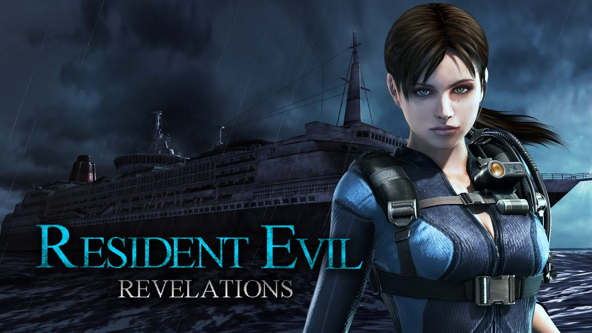

Resident Evil Revelations
imagem do jogo Resident Evil Revelations
Resident Evil: Revelations, conhecido no Japão como Biohazard: Revelations (バイオ ハザード リベレーションズ Baiohazādo Riberēshonzu), é um videojogo de Survival Horror para Nintendo 3DS. O jogo é uma spin-off canônica de Resident Evil [2] e foi desenvolvido e publicado pela Capcom. Foi lançado a 26 de janeiro de 2012 no Japão, 27 janeiro de 2012 na Europa e 7 de fevereiro de 2012 na América do Norte.[3] Sendo um dos muitos a suportar o periférico Circle Pad Expansion.[4][5]
Tendo ganhado um remaster em HD em maio de 2013 para Xbox 360, Wii U, PS3 e PC. E relançado em 1080p para PS4 e Xbox One em 29 de agosto 2017 e posteriormente para Nintendo Switch.[6][7][8].O jogo faz referencia a Divina comedia de Dante Alighieri[9][10]
Revelations verá um retorno ao jogo de sobrevivência ao horror como os primeiros títulos da série, com elementos como um suprimento limitado de munição, e mais ênfase na exploração e quebra-cabeças.[1] Como em Resident Evil 4 e Resident Evil 5, câmera do jogo mantém uma visão sobre-o-ombro por trás da personagem jogável.[11] o jogador pode mover o protagonista, enquanto aponta uma arma, e tem a opção de alternar entre uma perspectiva de primeira pessoa e terceira pessoa.[12][11] Um novo item, o scanner de abastecimento, detecta objetos escondidos em todos os ambientes do jogo.[13]
Resident Evil: Revelations é definido entre Resident Evil 4 e Resident Evil 5 e retrata os acontecimentos logo após a criação do grupo de combate ao bioterrorismo BSAA. Um ano antes dos eventos do jogo, a CFB (Comissão Federal de Bioterrorismo) enviou os agentes Parker Luciani e Jessica Sherawat para manter a "cidade flutuante" de Terragrigia sob controle depois que a organização bioterrorista Il Veltro lançou um ataque contra a cidade utilizando seres vivos geneticamente modificados, conhecidos como armas biológicas orgânicas (B.O.W) em oposição ao desenvolvimento de energia solar de Terragrigia. No presente, Clive R. O'Brian envia os agente da BSAA Jill Valentine e Parker para procurar os agentes Chris Redfield e Jessica, em sua última localização conhecida, o Cruzeiro Queen Zenobia no Mar Mediterrâneo. Eles supostamente tinham desaparecido durante a missão de investigar um possível reaparecimento da Veltro. A bordo do navio, Jill e Parker encontram várias armas biológicas infectadas com o vírus T-Abyss e entram em uma sala onde eles acreditam que Chris está preso, percebendo tarde demais que era uma armadilha aparentemente por um membro da Veltro. Enquanto isso, Chris e Jessica encontram uma base de operações da Veltro; a pista de pouso Valkoinen Mökki nas montanhas. Informados por O'Brian que Jill e Parker perderam contato no Mar Mediterrâneo, eles vão investigar o paradeiro dos agentes. O'Brian também envia agentes da BSAA Quint Cetcham e Keith Lumley para Valkoinen Mökki para coletar informações.
Despertando em quartos separados, Jill e Parker se encontram novamente e assistem a uma transmissão de vídeo de um membro da Veltro ameaçando infectar um quinto dos oceanos da Terra com o T-Abyss, que foi criado em retaliação à FBC por seu envolvimento na destruição das forças de Veltro em Terragrigia. Jill e Parker vão para a antena do navio a pedido de evacuação, mas são informados que um ataque por satélite no Queen Zanobia foi ativado pelo diretor da FBC Morgan Lansdale. O pedido é negado por O'Brian pois não conseguiriam um resgate a tempo. Apesar de suas tentativas de confundir o sistema do satélite, causando uma falha de ignição no navio, o ataque inunda o navio com água. Chris e Jessica chegam ao Queen Zenobia e, eventualmente, encontram-se com Jill e Parker. O membro da Veltro aparece e coloca várias questões insinuando uma conspiração maior. No entanto, Jessica atira nele antes que ele possa revelar mais. Parker desmascara-o e descobre que ele era seu parceiro da FBC Raymond Vester. Ele aparentemente morre depois de sussurrar algo para ele. Depois, Chris e Jill fazem o seu caminho para o laboratório do navio para impedir que o vírus contamine o mar, enquanto Parker e Jessica procuram uma maneira de evitar que o navio afunde. Durante a busca, Parker vira a arma para Jessica, suspeitando de ela ser uma agente dupla, como dito por Vester.